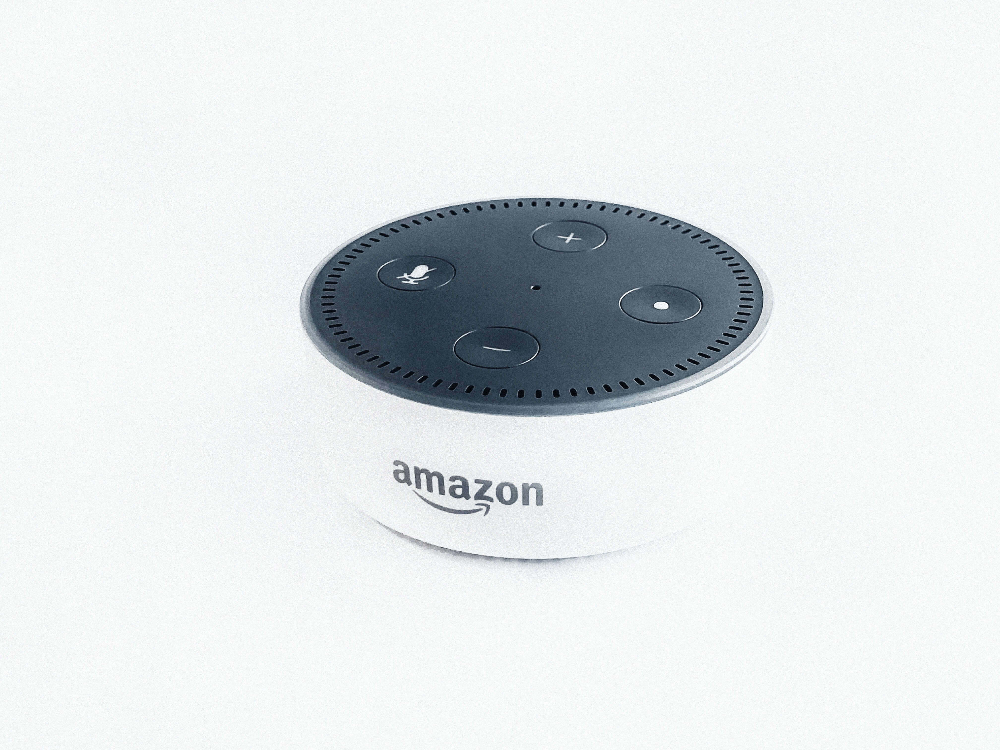

“Drones” has become a kind of buzzword in pop culture these days.We’ve seen real-life drone emulations of TV drones, drones that dance above the biggest stage in television, and even drones that might one day replace our doctors. However, chances are you don’t see them fluttering throughout the skies where you live. I know I don’t.
Primary reason for this is that the government is quite particular about how drones are operated. In the U.S., all drone operators are required to stay within eyeshot of their craft, thus greatly limiting their traveling radius. Now, a radar array start-up may have developed technology that could cause the Federal Aviation Administration (FAA) to ease those restrictions.
Echodyne is backed by some big name investors, including Bill Gates, Vulcan Capital, and Madrona Ventures. They believe in the company’s ground-breaking product, the Metamaterial Electronically Scanning Array (MESA). This radar array is small enough that it could be easily attached to any drone, such as those used by Google or Amazon to make deliveries.
Echodyne is backed by some big name investors, including Bill Gates, Vulcan Capital, and Madrona Ventures. They believe in the company’s ground-breaking product, the Metamaterial Electronically Scanning Array (MESA). This radar array is small enough that it could be easily attached to any drone, such as those used by Google or Amazon to make deliveries.
What’s particularly notable about MESA is that it’s exponentially more powerful than currently circulated radars, such as those used in Uber and Google’s autonomous cars. The video above illustrates the difference between the data collected by camera and by radar. It is difficult to make out the drone on the camera, but the radar clearly displayed the distance and altitude of the other drone in the vehicle’s line of sight.
Echodyne’s tech is designed to detect Cessna-sized aircrafts from 3 kilometers (1.9 miles) away and small drones from up to 750 meters (~0.5 miles) away. In short, the product is developed to fortify trust in unmanned vehicle operation when they are out of eyesight. From use by the government to delivery companies to commercial consumers, MESA has a wide range of potential applications, and as Echodyne grows, so will the number of drones we see fluttering in the skies.
Virtual reality is a complex, advanced technology that has seen great success for its short time span of full availability to consumers.
Amazon wants Alexa everywhere, and it will even go head to head with microwave and subwoofer makers to get there